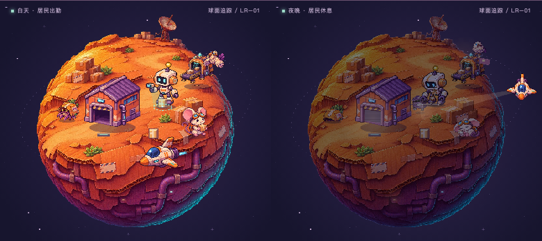
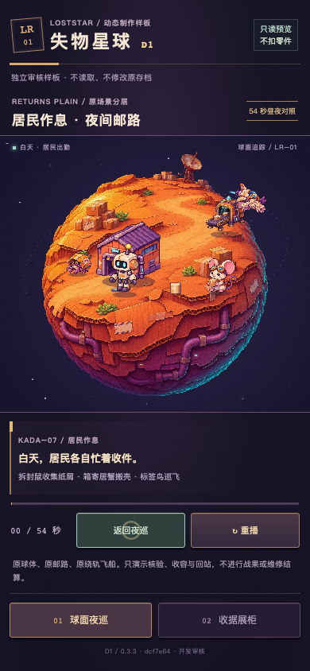
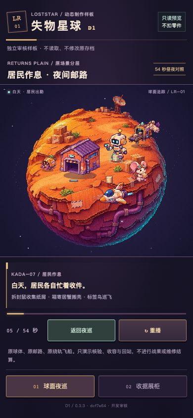
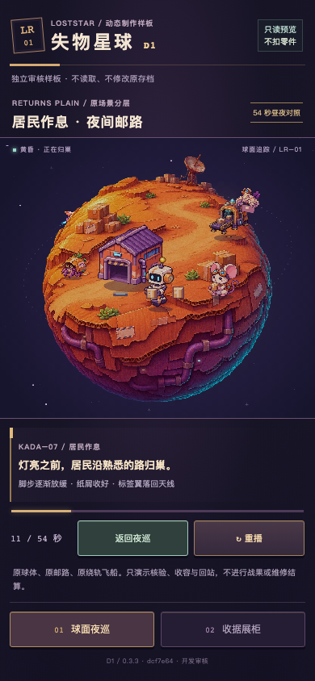
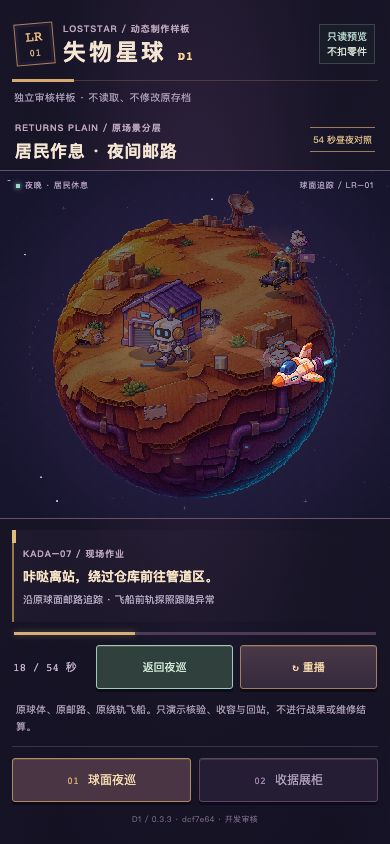
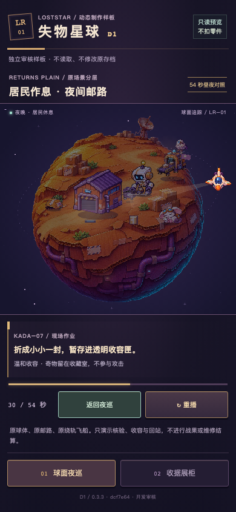
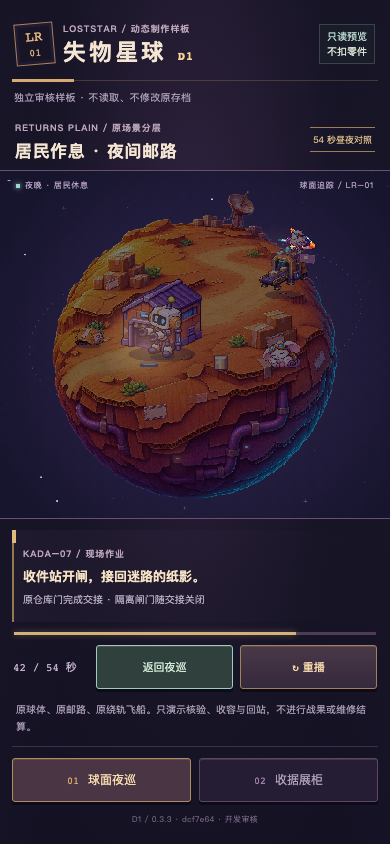
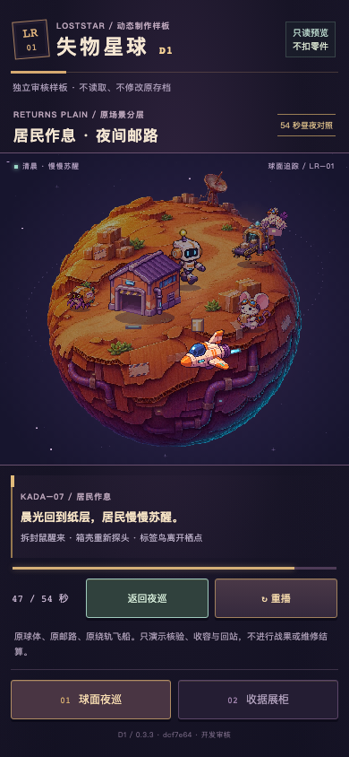
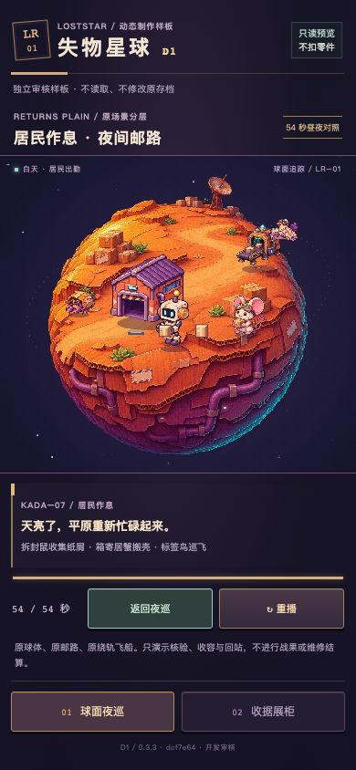
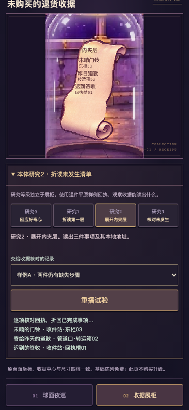

54秒居民昼夜对照
D1缩短阶段长度以便比较，角色动作速度保持真实时间。
0.3.3 · dcf7e64 · dcf7e64ea935d9b30fe4a14d14807e8efbd66eb5
以下均为真实墙钟桌面移动触控仿真。TapTap手机视觉与长时表现待扫码复审。
0.3.2旧版对照 · 原始录制与采样 · 原远征自然游玩记录 · 测试记录
D1缩短阶段长度以便比较，角色动作速度保持真实时间。
四级研究与柜体独立，样例增补签收后，未发生事项由2变为1。
新浏览器自然游玩并发现居民，随后保留该存档录制完整310秒。普通游戏维持4分钟白天与1分钟夜晚。










收据研究为D1本体能力样板，使用本地样例回执。正式研究成长存档的接入遵循样板审核门槛。居民作息已接普通远征持久世界时钟。